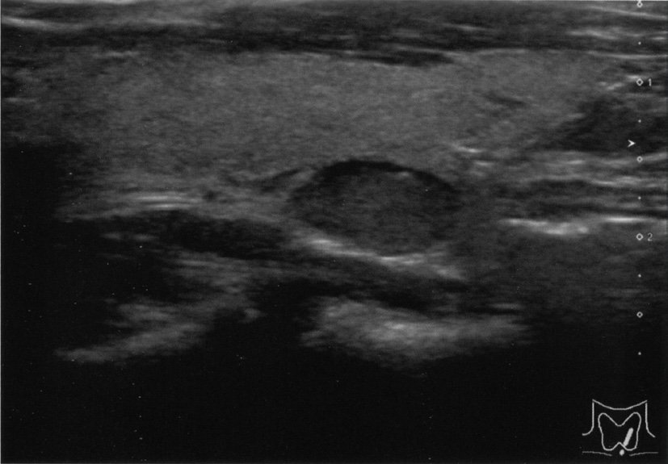
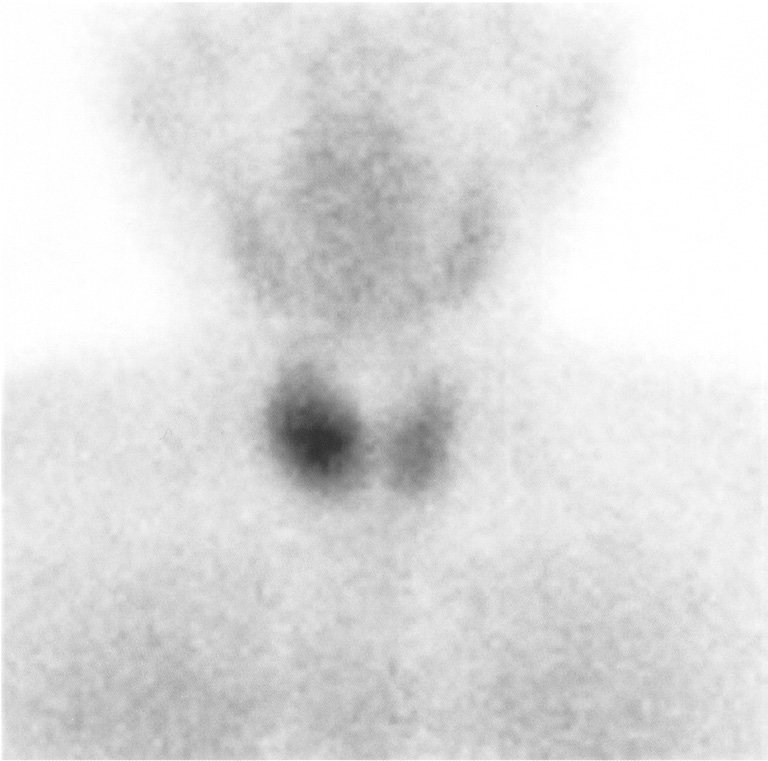
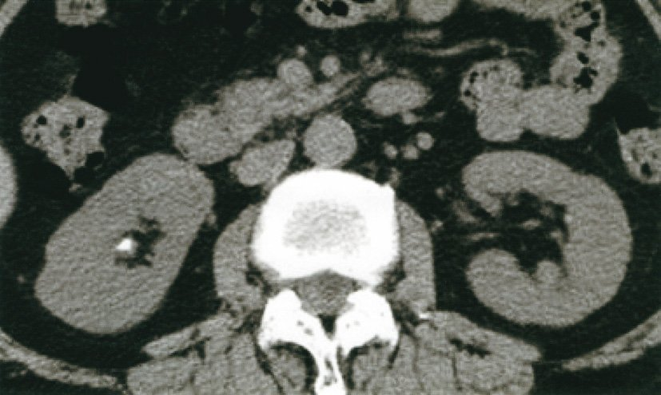
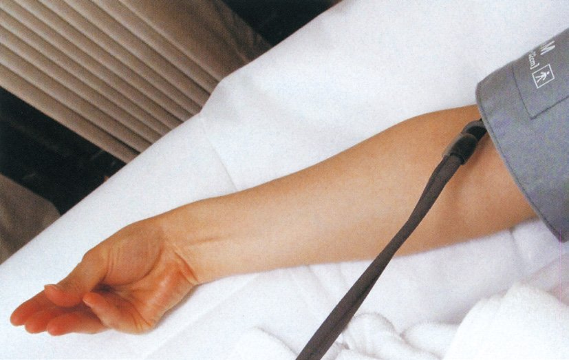
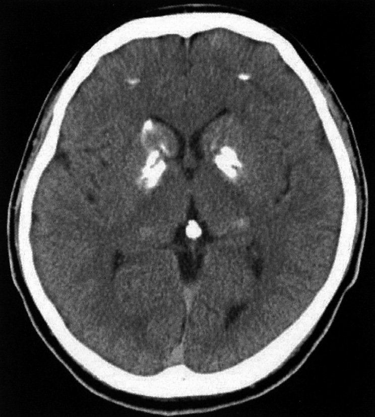

| 項目 | 所見 |
|---|---|
| 項目 | 所見 |
| 血清Ca | ↑（高Ca血症） |
| 血清P | ↓（低リン血症） |
| 血清PTH | ↑（高値） |
| ALP | ↑（骨型：骨吸収亢進） |
| 尿中Ca排泄 | ↑（高Ca尿症→尿路結石） |
| 骨密度 | ↓（特に皮質骨：橈骨遠位端・大腿骨頸部） |
| 活性型VitD | ↑（PTH→1α水酸化酵素活性化） |
| 病態 | Ca | P | PTH |
|---|---|---|---|
| 病態 | Ca | P | PTH |
| ビタミンD欠乏症 | ↓ | ↓（同方向） | ↑（代償性） |
| 副甲状腺機能亢進症（原発） | ↑ | ↓（反対方向） | ↑ |
| 副甲状腺機能低下症 | ↓ | ↑（反対方向） | ↓ |
| 慢性腎不全 | ↓ | ↑（反対方向） | ↑（続発性） |
| 腫瘍性骨軟化症（FGF23↑） | 正常 | ↓ | 正常〜↓ |
| 偽性副甲状腺機能低下症 | ↓ | ↑（反対方向） | ↑↑ |
| PTH高値 | PTH低値 |
|---|---|
| PTH高値 | PTH低値 |
| 原発性副甲状腺機能亢進症 | 真性副甲状腺機能低下症（PTH欠乏） |
| 続発性（腎不全・VitD欠乏） | 外科的切除後 |
| 偽性副甲状腺機能低下症（代償性↑↑） | — |
| 異所性PTH産生腫瘍（稀） | — |
| 作用部位 | PTHの作用 |
|---|---|
| 作用部位 | PTHの作用 |
| 近位尿細管 | リン再吸収↓（排泄↑）＋HCO₃⁻再吸収↓ |
| 近位尿細管（1α水酸化酵素） | 活性型VitD産生↑ |
| 遠位尿細管・集合管 | Ca再吸収↑（Ca保持） |
| 傍糸球体装置 | EPO産生には直接関与しない |


| 病態 | PTH | Ca | 方向 |
|---|---|---|---|
| 病態 | PTH | Ca | 方向 |
| 真性副甲状腺機能低下症 | ↓ | ↓ | 同方向（両方低下） |
| 原発性副甲状腺機能亢進症 | ↑ | ↑ | 同方向（両方上昇） |
| 偽性副甲状腺機能低下症 | ↑↑ | ↓ | 逆方向 |
| VitD欠乏・慢性腎不全 | ↑（代償） | ↓ | 逆方向 |
| HHM（悪性腫瘍） | ↓（抑制） | ↑↑ | 逆方向 |

